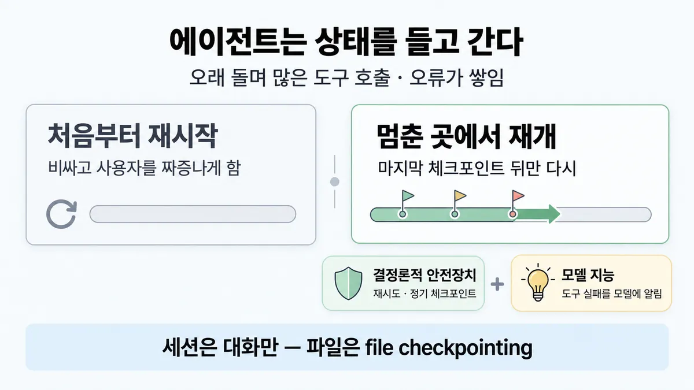
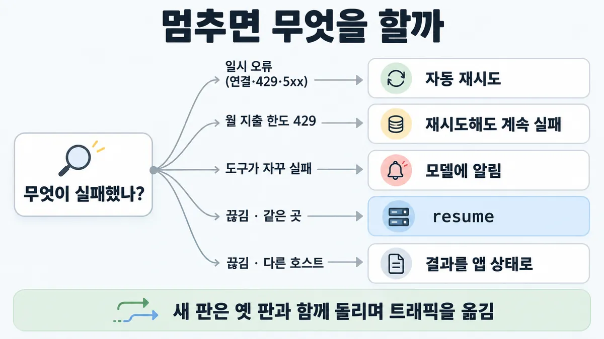

■ 에이전트 상태·실패·배포
왜 배우나 — 시험이 요구하는 것
시험 목표 1.4 멀티 에이전트와 조율 · D1 설계 17%Design multi-agent systems and orchestration strategies
이 개념으로 푸는 판단 (할 수 있어야 하는 것)
- 1.4③ 일꾼 하나가 멈추면 전체는? — 상태·실패 전파·배포를 어떻게 다루나
- 2.4② 긴 에이전트 작업에서 창이 차오른다 — 무엇을 남기고 무엇을 밖으로 빼나? — 컨텍스트 관리 수단 (사전 로드 vs 그때 가져오기 · 컴팩션 · 구조화 메모 · 서브에이전트 요약)
한눈에
에이전트는 오래 돌며 많은 도구 호출에 걸쳐 상태를 들고 감 → 작은 실패도 치명적이고 오류가 쌓임. 그래서 실패·실행 방식·배포를 상태 있는 시스템으로 다룸 ✓ 확인
작은 변경도 큰 행동 변화로 번짐 → 시제품과 프로덕션의 거리가 생각보다 멂 ✓ 확인
비유 Step Functions 재시도·체크포인트 · 옛 버전과 새 버전을 함께 두고 트래픽을 옮기는 배포. "파드 재시작이면 복구 끝" 은 상태 있는 작업의 진행분을 날림


ELI5
긴 퍼즐을 맞추다가 잠깐 넘어졌을 때를 생각해 봐요.
- 다 쏟고 처음부터 다시 하면 너무 아까워요.
- 그래서 중간중간 사진을 찍어 두고, 거기서 다시 시작해요.
- 친구 모두가 한 명을 기다리면, 그 친구가 늦을 때 다 같이 멈춰요.
- 퍼즐 판을 바꿀 땐, 맞추던 친구 것은 그대로 두고 새 친구부터 새 판을 줘요.
개념 설명
원리
왜 상태가 문제인가
- 에이전트는 수십~수백 번 도구를 부르며 상태를 쌓음. 한 걸음이 틀리면 뒤 경로가 통째로 달라짐 → 오류가 쌓임.
- 처음부터 다시 = 쌓은 진행분을 버림 + 비용·시간을 다시 냄. 그래서 "멈춘 곳에서 재개".
두 겹의 안전장치
- 결정론적 쪽 : 재시도(SDK 기본 2번, 지수 백오프) · 정기 체크포인트 · 세션 저장(resume).
- 모델 쪽 : 도구가 실패했다고 알려 주면 모델이 다른 길을 찾음. 오류 메시지는 고칠 점이 보이게.
- 재시도로 안 풀리는 실패가 있음(월 지출 한도 429) — 종류를 가려야 함.
동기 vs 비동기
- 동기 : 묶음 단위로 기다림 → 조율 단순. 대신 가장 느린 subagent(일꾼)가 전체 속도를 정하고, 도중에 방향을 못 바꿈.
- 비동기 : 끝나는 대로 다음으로 → 병렬성↑. 대신 결과를 맞추고 상태를 일관되게 두고 오류가 번지지 않게 하는 일이 생김.
배포
- 돌고 있는 에이전트는 "어느 판의 프롬프트·도구"를 전제로 계획을 세워 둠. 중간에 판이 바뀌면 깨짐.
- 옛 판·새 판을 함께 두고 새 트래픽만 새 판으로 → 도는 것은 옛 판에서 끝남.
규칙과 판단


갈림길
① 멈추면 [1.4③]
자동 재시도
공식 SDK 가 지수 백오프로 기본 2번 자동 재시도 ✓ 확인
재시도해도 계속 실패
retry-after 없이 계속 실패 ✓ 확인
모델에 알림
도구 실패를 모델에 알려 적응시킴 ✓ 확인
한도를 올려 resume
max_turns·예산 한도로 끝난 실행도 한도를 올려 resume ✓ 확인
resume
멈춘 곳에서 재개 ✓ 확인 · 세션은 대화만 저장, 파일시스템은 아님 → 파일은 file checkpointing ✓ 확인
결과를 앱 상태로
결과(분석·결정·diff)를 앱 상태로 저장해 새 세션 프롬프트에 넣음 — 흔히 더 튼튼 ✓ 확인
② 기다릴까 [1.4③]
동기
조율은 쉽지만 subagent(일꾼) 하나 때문에 전체가 막힘 ✓ 확인
비동기
결과 조율 · 상태 일관성 · subagent 간 오류 전파가 어려움 ✓ 확인
③ 새 판 배포 [1.4③]
옛 판·새 판 함께
옛 판·새 판을 함께 돌리며 트래픽을 조금씩 옮김 (rainbow deployment) ✓ 확인
코디네이터 업데이트
참조 에이전트는 스냅샷 판에 고정 → 새 판에 위임하려면 코디네이터를 업데이트 ✓ 확인
흐름
그림 속 이름·금액·시간·토큰 수는 예시예요. 공식 한도·동작은 카드 본문 값이 기준.
장면 글로 보기
칸 : orchestrator → subagents → 체크포인트
규칙 (체크포인트) : 결정론적 안전장치 (재시도 로직 · 정기 체크포인트)
질문 : 끊기면 어디서부터 다시 할까?
① 멈춘 곳에서 재개 ✓
- 시작 : orchestrator — 말 : “환불 오류 원인을 찾아 줘 (단계 9개)”
- 위임 : orchestrator → subagents : 단계를 나눠 맡김 — 쪽지 : 단계 1~9 / subagent 3개
- 저장 : subagents → 체크포인트 : 정기 체크포인트 — 쪽지 : 2:30 저장 / 끝난 단계 7 · 남은 단계 2
- 실패 : subagents : 도구 실패를 모델에 알림 — 쪽지 : tool_result: 검색 시간 초과 / 재시도 가능 · 부분 결과 있음
- 재개 : 체크포인트 → subagents : 멈춘 곳에서 재개 — 쪽지 : resume: 세션 ID / 2:30 저장분부터 → 10분만 다시
- 끝 : 결정론적 안전장치 + 모델 지능을 함께 — 다시 할 양 = 마지막 체크포인트 뒤만
② 처음부터 재시작 ≠
- 시작 : orchestrator — 말 : “환불 오류 원인을 찾아 줘 (단계 9개)”
- 건너뜀 : 체크포인트
- 위임 : orchestrator → subagents : 단계를 나눠 맡김 — 쪽지 : 단계 1~9 / subagent 3개
- 실패 : subagents : 검색 시간 초과 — 쪽지 : 2:40 오류 / search timeout
- 재시작 : orchestrator → subagents : 처음부터 재시작 — 쪽지 : 단계 1/9 부터 다시 / 다시 할 양 2시간 40분
- 끝 : 재시작은 비싸고 사용자를 짜증나게 함
③ 동기 대기 ≠
- 시작 : orchestrator — 말 : “환불 오류 원인을 찾아 줘 (단계 9개)”
- 위임 : orchestrator → subagents : 묶음이 다 끝날 때까지 기다림 — 쪽지 : subagent 4개 / 70초 · 85초 · 95초 · 8분
- 타이머 : subagents : 검색 시간 초과
- 대기 : subagents → orchestrator : 셋은 끝났는데 기다림 — 쪽지 : 도착 3/4 · 95초에 끝남 / 남은 1개 때문에 8분 대기
- 끝 : subagent 하나 때문에 전체가 막힘
규칙 원문 ①②③ (갈림길로 그린 규칙)
-
상태와 실패 : 실패하면 처음부터 재시작 말고 멈춘 곳에서 재개 — 재시작은 비싸고 사용자를 짜증나게 함 ✓ 확인 [1.4③]
결정론적 안전장치(재시도 로직 · 정기 체크포인트) + 모델 지능(도구 실패를 모델에 알려 적응시킴)을 함께 ✓ 확인
도구 오류는 불투명한 코드·traceback 말고 구체적으로 고칠 점을 알려 주는 메시지로 ✓ 확인 → ■ 도구 설계
subagent 실패를 "성공 + 빈 결과" 로 삼키지 않음 → orchestrator(지휘자)가 반응하게 오류 종류 · 재시도 가능 여부 · 모은 부분 결과를 돌려줌 (공식 = 도구 실패를 모델에 알림 · 구체적 오류 메시지 ✓ · 필드 구성은 이 카드의 해석)
재시도 : 공식 SDK 가 일시 오류(연결·429·5xx)를 지수 백오프로 기본 2번 자동 재시도(
max_retries로 조정) ✓ 확인 · 단 월 지출 한도 429 는 retry-after 없이 계속 실패 ✓ 확인 → ■ rate limit재개 수단 (Agent SDK 세션) : continue = 가장 최근 세션 · resume = 세션 ID 로 · fork = 원본은 두고 갈래를 새로 ✓ 확인
max_turns·예산 한도로 끝난 실행도 한도를 올려 resume ✓ 확인
세션은 대화만 저장, 파일시스템은 아님 → 파일은 file checkpointing ✓ 확인
다른 호스트면 SessionStore 로 전사 복제, 또는 결과(분석·결정·diff)를 앱 상태로 저장해 새 세션 프롬프트에 넣음 — 흔히 더 튼튼 ✓ 확인
Managed Agents : 세션이 대화 기록·샌드박스 상태·산출물을 서버에 저장, 멈춘 뒤 깨끗이 재개 ✓ 확인
긴 작업 : 끝난 단계는 요약해 외부 메모리에 · 컨텍스트 창이 차면 새 서브에이전트로 넘기고 계획은 메모리에서 되찾음 ✓ 확인 · 새 컨텍스트 창에선 progress 파일·git 로그로 상태를 되찾음, git = 되돌릴 체크포인트 ✓ 확인
디버깅 : 같은 프롬프트도 실행마다 결정이 다름 → 전체 프로덕션 트레이싱 + 대화 내용 말고 결정 패턴·상호작용 구조를 관측 ✓ 확인 → ■ observability 세 신호 · ■ 텔레메트리 기록 범위
-
동기 vs 비동기 : 동기 = subagent 묶음이 다 끝날 때까지 기다림 → 조율은 쉽지만 orchestrator 가 도중에 subagent 의 방향을 못 틀고 · subagent 끼리 조율 못 하고 · subagent 하나 때문에 전체가 막힘 ✓ 확인 [1.4③]
비동기 = 동시 작업 · 필요할 때 새 subagent → 병렬성↑. 대신 결과 조율 · 상태 일관성 · subagent 간 오류 전파가 어려움 ✓ 확인
연구 글(2025)은 동기로 운영, 모델이 더 긴 일을 하게 되면 비동기의 이득이 그 복잡도를 넘을 것으로 봄 ✓ 확인
병렬이면 독립 작업은 합이 아니라 가장 느린 것의 시간에 끝남 ✓ 확인
Agent SDK 서브에이전트는 기본이 백그라운드, 결과가 먼저 필요하면 Claude 가
run_in_background: false(2026-09-28 조회) ✓ 확인Managed Agents 세션 상태 = 모든 스레드 집계 (하나라도 running 이면 running) ✓ 확인
-
배포 : 에이전트 = 거의 쉬지 않고 도는 상태 있는 연결망(프롬프트·도구·실행 로직이 얽힘) → 배포 순간 에이전트가 과정 어디든 있을 수 있어 모두를 한꺼번에 새 판으로 못 바꿈 ✓ 확인 [1.4③]
rainbow deployment = 옛 판·새 판을 함께 돌리며 트래픽을 조금씩 옮김 ✓ 확인
Managed Agents : 코디네이터 명단은 만들거나 업데이트할 때 스냅샷으로 저장됨, 참조 에이전트는 스냅샷 판에 고정 → 새 판에 위임(delegation)하려면 코디네이터를 업데이트 ✓ 확인
더 깊이 : 판단 규칙 · 상황 변수 (설명)
판단 규칙
| 조건 | 답 | 등급 | 근거 |
|---|---|---|---|
| 긴 실행이 중간에 실패 | 처음부터 말고 멈춘 곳에서 재개 | ✓ 확인 | multi-agent-research-system en 70줄 |
| 도구가 계속 실패 | 실패를 모델에 알려 적응시킴 + 재시도·체크포인트 | ✓ 확인 | multi-agent-research-system en 70줄 |
| 연결 오류·429·5xx | SDK 자동 재시도(기본 2번, 지수 백오프) | ✓ 확인 | errors en 17줄 |
| 월 지출 한도 429 | 재시도 무의미 — 접근이 풀릴 때까지 계속 실패 | ✓ 확인 | errors en 12줄 |
| max_turns·예산 한도로 끝남 | 한도를 올려 같은 세션 resume | ✓ 확인 | agent-sdk-sessions en 423줄 |
| 다른 호스트·서버리스에서 이어가야 함 | SessionStore 로 전사 복제, 또는 결과를 앱 상태로 새 세션에 | ✓ 확인 | agent-sdk-sessions en 594~597줄 |
| 에이전트가 파일을 바꿨고 되돌려야 함 | file checkpointing (세션은 대화만) | ✓ 확인 | agent-sdk-sessions en 186줄 |
| subagent 하나가 전체를 막음 | 동기 병목 — 비동기는 병렬성을 주지만 조율·일관성·오류 전파 부담 | ✓ 확인 | multi-agent-research-system en 76줄 |
| 실행 중인 에이전트가 있는데 배포 | 옛 판·새 판을 함께 두고 트래픽을 옮김 | ✓ 확인 | multi-agent-research-system en 74줄 |
| Managed Agents 에서 subagent 새 판을 씀 | 코디네이터를 업데이트(명단은 스냅샷 고정) | ✓ 확인 | managed-agents multi-agent ko 36줄 |
상황 변수
| 변수 | 값 | 답 쪽 | 등급 | 근거 |
|---|---|---|---|---|
| 실행 길이 | 몇 시간 · 도구 호출 수백 | 체크포인트 + 재개 | ✓ 확인 | multi-agent-research-system en 70줄 |
| 실행 길이 | 한 번에 끝나는 무상태 호출 | 그냥 다시 실행(재시도)이 맞음 · 세션 저장도 끌 수 있음 | ✓ 확인 | 뒤집히는 때 1 |
| 실패 종류 | 일시 오류 | 재시도 | ✓ 확인 | errors en 17줄 |
| 실패 종류 | 한도(지출·턴·예산) | 재시도가 아니라 한도를 바꾸고 재개 | ✓ 확인 | errors en 12줄 · agent-sdk-sessions en 423줄 |
| 호스트 | 같은 머신 | resume | ✓ 확인 | agent-sdk-sessions en 203~205줄 |
| 호스트 | CI·임시 컨테이너·서버리스 | 결과를 앱 상태로 · 또는 SessionStore | ✓ 확인 | 뒤집히는 때 2 |
| subagent 시간 편차 | 한 subagent 만 유독 느림 | 동기면 그 subagent 가 전체 시간을 정함 | 계산 | 뒤집히는 때 3 |
| subagent 시간 편차 | 비슷함 · 조율이 중요 | 동기로 충분 | ✓ 확인 | 뒤집히는 때 4 |
| 배포 시점 | 도는 에이전트 있음 | 옛 판·새 판 함께 | ✓ 확인 | 판단 규칙 9 |
연습 문제
고객지원 Agent 의 3시간짜리 환불 오류 원인 조사가 2시간 40분째에 작업 서버 재부팅으로 끊겼다중간에 끊김. 운영팀은 "깨끗하게 처음부터 다시 돌리자"고 한다. 재부팅된 서버는 같은 머신이라 세션 기록이 그대로 남아 있다같은 곳. 어떻게 이어 갈까?
시험 대비
함정
- subagent 하나가 검색 시간 초과 → "실패하면 전체를 처음부터 다시" → 멈춘 곳에서 재개 ✓ 확인
- "전부 비동기로 바꾸면 무조건 빨라진다" → 결과 조율 · 상태 일관성 · 오류 전파 비용 ✓ 확인
- "재시도 로직만 넣으면 끝" → 결정론적 안전장치 + 도구 실패를 모델에 알림. 지출 한도 429 는 재시도해도 계속 실패 ✓ 확인
- "resume·fork 하면 파일 변경도 되돌아간다" → 세션·fork 는 대화만. 파일은 file checkpointing ✓ 확인
- "새 판을 한꺼번에 배포" → 돌던 에이전트가 깨짐 → 옛 판·새 판 함께 ✓ 확인
- "코디네이터가 참조 에이전트의 최신 판을 자동으로 씀" → 스냅샷 판에 고정 ✓ 확인
- "원인 찾으려 대화 내용을 전부 기록" → 결정 패턴·상호작용 구조를 관측(프라이버시) → ■ 텔레메트리 기록 범위 ✓ 확인
- Managed Agents 세션 예산 : 예산에 닿으면
budget_reached로 일시 정지, 예산을 바꾸면 재개 · 스레드마다 따로 정지 시험 뒤 변경 2026-08-07
신호
"Agents are stateful and errors compound."
"Instead, we built systems that can resume from where the agent was when the errors occurred."
"letting the agent know when a tool is failing and letting it adapt works surprisingly well."
"We combine the adaptability of AI agents built on Claude with deterministic safeguards like retry logic and regular checkpoints."
"Synchronous execution creates bottlenecks."
"by gradually shifting traffic from old to new versions while keeping both running simultaneously."
"Capture the results you need (analysis output, decisions, file diffs) as application state and pass them into a fresh session’s prompt."
더 깊이 : 뒤집히는 때 · 오답 재료 (설명)
뒤집히는 때
1. 처음부터 다시가 맞는 때
- 조건 : 티켓 한 건 분류처럼 한 번 호출로 끝나는 무상태 작업.
- 판단 : 쌓인 상태가 없으니 "재개"할 것도 없음. 다시 실행(재시도)이 가장 단순. Agent SDK 도 무상태 작업엔 세션을 디스크에 안 남기는 옵션을 둠(
persistSession: false, TypeScript). - 등급 : ✓ 확인 (옵션) · "상태가 없으면 재시작이 맞다"는 추론
- 근거 : agent-sdk-sessions en 207줄
2. resume 보다 "새 세션 + 앱 상태"가 나은 때
- 조건 : 실행이 CI 워커·임시 컨테이너를 옮겨 다님. 세션 파일은 만든 머신에만 있음.
- 판단 : 공식 선택지 셋 = SessionStore 로 전사 복제 · 세션 파일 옮기기 · resume 에 기대지 않기. 필요한 결과(분석·결정·diff)를 앱 상태로 잡아 새 세션 프롬프트에 넣는 쪽이 "흔히 더 튼튼".
- 등급 : ✓ 확인
- 근거 : agent-sdk-sessions en 594~597줄 · prompting-best-practices en 323줄(새 창에서 파일시스템으로 상태를 되찾는 편이 compaction 보다 나을 때가 있음)
3. 동기 대기가 전체를 붙잡을 때
- 조건 : subagent 4개가 70초 · 85초 · 95초 · 8분(시간 초과 직전).
- 계산 : 순차 = 70 + 85 + 95 + 480 = 730초(약 12분). 병렬 동기 = 가장 느린 것 480초(8분). 느린 하나를 빼면 95초 → 한 subagent 때문에 약 5배 김.
- 판단 : 병렬화만으로는 부족. 느린 subagent 에 시간 한도 + 실패를 모델에 알려 다른 길 찾기, 또는 비동기로 먼저 끝난 결과부터 진행. 비동기의 대가 = 결과 조율 · 상태 일관성 · 오류 전파 관리.
- 전제 : subagent 끼리 독립 · orchestrator(지휘자) 합성 시간은 뺌.
- 등급 : 계산 (병렬 = 가장 느린 것의 시간은 확인)
- 근거 : agent-sdk-subagents en 221줄 · multi-agent-research-system en 76줄
4. 동기로 두는 게 나은 때
- 조건 : subagent 시간이 비슷하고, orchestrator 가 모든 결과를 모아 한 번에 판단해야 함.
- 판단 : 연구 글의 실제 운영(production)도 동기. 조율이 단순하다는 이득이 큼. 공식은 "모델이 더 긴 일을 하게 되면" 비동기 이득이 복잡도를 넘을 것이라 함 — 지금 무조건 비동기가 아님.
- 등급 : ✓ 확인
- 근거 : multi-agent-research-system en 76줄
5. 재개 지점을 얼마나 자주 — 잃는 양 계산
- 조건 : 3시간짜리 조사가 2시간 40분에 실패. 체크포인트는 25분마다.
- 계산 : 처음부터 = 2시간 40분을 다시. 재개 = 마지막 체크포인트 뒤 최대 25분만 다시(2시간 30분 시점 저장 → 10분).
- 판단 : 체크포인트 간격 = 실패 때 다시 할 최대 양. 긴 작업일수록 촘촘히.
- 등급 : 계산 (정기 체크포인트는 확인)
- 근거 : multi-agent-research-system en 70줄
오답 재료
| 오답 | 왜 끌리나 | 왜 틀리나 | 등급 | 근거 |
|---|---|---|---|---|
| "실패하면 전체를 처음부터 다시 돌린다" | 깨끗하게 새로 | 재시작은 비싸고 사용자를 짜증나게 함. 멈춘 곳에서 재개 | ✓ 확인 | multi-agent-research-system en 70줄 |
| "전부 비동기로 바꾸면 무조건 빨라진다" | 기다림이 사라짐 | 결과 조율 · 상태 일관성 · 오류 전파 부담 | ✓ 확인 | multi-agent-research-system en 76줄 |
| "재시도 횟수를 늘리면 해결" | 대부분 오류는 일시적 | 지출 한도 429 는 계속 실패 · 도구 실패는 모델이 적응해야 | ✓ 확인 | errors en 12줄 · multi-agent-research-system en 70줄 |
| "fork 하면 파일도 갈라진다" | 세션을 복사하니 | fork 는 대화만. 파일 변경은 진짜로 남음 | ✓ 확인 | agent-sdk-sessions en 486줄 |
| "파드 재시작이면 복구 끝" | 무상태 서비스 습관 | 상태 있는 작업은 진행분이 날아감 | ✓ 확인 | multi-agent-research-system en 70줄 |
| "새 판을 한 번에 전부 배포" | 판이 섞이면 복잡해 보임 | 도는 에이전트가 깨짐. 옛 판·새 판을 함께 | ✓ 확인 | multi-agent-research-system en 74줄 |
| "명단 에이전트를 고치면 코디네이터가 바로 새 판을 쓴다" | 참조니까 최신일 듯 | 스냅샷 고정. 코디네이터를 업데이트해야 | ✓ 확인 | managed-agents multi-agent ko 36줄 |
| "원인 분석을 위해 대화 내용 전부 수집" | 많이 보면 잘 보임 | 결정 패턴·상호작용 구조 관측으로 충분, 대화 내용은 안 봄(프라이버시) | ✓ 확인 | multi-agent-research-system en 72줄 |
참고
개념
출처
- 가이드 목표 1.4 공식 시험 가이드 v1.0
- multi-agent-research-system (en 68·70·72·74·76·80·98줄)
- agent-sdk-sessions (en 186·203~207·217~220·423·486·594~597줄)
- agent-sdk-subagents (en 221·366줄)
- managed-agents overview (en 78줄)
- managed-agents multi-agent (ko 36·124·126줄)
- errors (en 12·17줄)
- writing-tools-for-agents (en 185줄)
- prompting-best-practices (en 323·341줄)
- 릴리스 노트 (en 100줄)
상태
- ✓ 확인 (①~③ 전부)
- 시험 뒤 변경 1곳(세션 예산)
미해결
- 목록 1.4③ 의 영어 신호 2개("Agents are stateful and errors compound.", "Synchronous execution creates bottlenecks.")는 원문에서 찾음(en 70·76줄) — 이상 없음.
- 목록의 비유 용어 "rainbow deployment" 는 공식 글 용어가 맞음(en 74줄). 구체 절차(몇 % 씩 옮기나)는 공식 글에 없음.
- Agent SDK 서브에이전트 "기본 백그라운드"는 지금 문서 값(Claude Code v2.1.198 이후). 시험 시점(2026-07) 기준인지 모름.
- 세션 예산(
budget_reached)은 2026-08-07 추가 — 시험 뒤 변경.